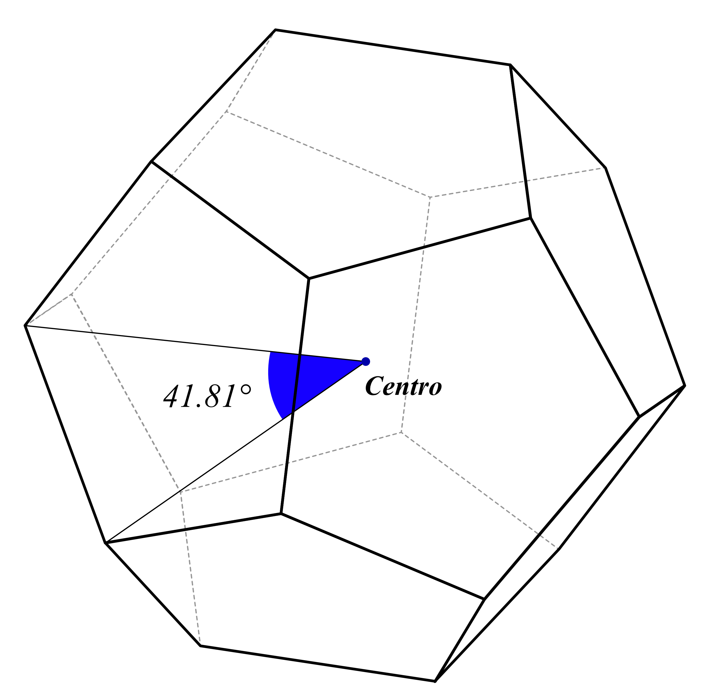

ORIGEN Y EVOLUCIÓN HISTÓRICA
Desde hallazgos neolíticos hasta la geometría moderna, los sólidos platónicos pasaron de ser formas simbólicas a convertirse en objetos matemáticos rigurosos y modelos culturales duraderos (Extremiana et al., 2001; González, 2013; Quesada, 2006a).
Ecos prehistóricos: hallazgos neolíticos en Escocia
Las Neolithic Carved Stone Balls muestran patrones simétricos que recuerdan estructuras de poliedros regulares. Aunque no prueban una teoría formal, sí sugieren una intuición geométrica temprana asociada a prácticas rituales y simbólicas (Extremiana et al., 2001; González, 2013).
Lectura histórica
Simetría empírica antes de la formalización griega
La formalización griega
Pitagóricos y Teeteto
En la Grecia clásica, el estudio de los poliedros pasó del uso artesanal a la clasificación matemática. La tradición pitagórica impulsó su dimensión cosmológica y Teeteto sistematizó los cinco sólidos regulares convexos, base para la exposición posterior de Euclides (Hoyuelos, 2018; González, 2013).
Platón y el Timeo
Platón vinculó tetraedro, octaedro, icosaedro y cubo con fuego, aire, agua y tierra; el dodecaedro quedó asociado al cosmos. Esta lectura no es una demostración matemática, sino una síntesis filosófica que consolidó el nombre de “sólidos platónicos” (Platón, 2023; Saulino, 2021).
Euclides y la demostración de unicidad
En el Libro XIII de Los Elementos, Euclides prueba que solo existen cinco poliedros regulares convexos bajo condiciones de regularidad y convexidad, cerrando la clasificación clásica (González, 2013; Quesada, 2006a).

Representación clásica de los cinco sólidos platónicos.
Renacimiento y orden cósmico
Pacioli, Leonardo y la cultura visual
Durante el Renacimiento, los sólidos regulares articularon matemática, arte y perspectiva. En De divina proportione, Pacioli y los dibujos de Leonardo reforzaron el vínculo entre proporción, belleza y estructura del mundo (Pacioli, 1509; Platón, 2004).

Retrato de Luca Pacioli con presencia de sólidos en el entorno pictórico.
Kepler y la cosmología poliédrica
En Mysterium Cosmographicum, Kepler propuso que las órbitas planetarias conocidas podían entenderse mediante sólidos platónicos anidados. Luego, en Harmonices Mundi, amplió el análisis hacia poliedros estrellados, hoy llamados sólidos de Kepler (Kepler, 1619; García, 2009).

Johannes Kepler y su programa cosmológico geométrico.
Geometría moderna y continuidad clásica
En la modernidad, el estudio de los sólidos platónicos se reformula con teoría de grupos, grafos y topología, manteniendo su valor como modelos de regularidad y simetría (Quesada, 2006; DeHovitz, 2016). A la vez, el teorema de Euler para poliedros convexos consolidó una relación estructural fundamental:
Fórmula de Euler
V - A + C = 2
Esta expresión revalida, en lenguaje moderno, la consistencia de la clasificación de los cinco sólidos regulares convexos (Quesada, 2006a).
GEOMETRÍA SAGRADA Y SIMBOLISMO FILOSÓFICO
La tradición filosófica asocia los sólidos con una lectura espiritual del orden del universo, distinta de su demostrabilidad matemática estricta (Saulino, 2021; Platón, 2023).
Concepto y límites del enfoque
La geometría sagrada interpreta regularidad, proporción y simetría como huella de armonía cósmica. Sin embargo, desde la matemática, solo son demostrables propiedades geométricas (regularidad, convexidad, clasificación), no su lectura metafísica (Saulino, 2021; Platón, 2004).
Correspondencia simbólica en el Timeo
La tradición platónica asocia tetraedro-fuego, octaedro-aire, icosaedro-agua, cubo-tierra y dodecaedro-cosmos. Esta propuesta influyó en lecturas renacentistas y en el simbolismo cosmológico de Kepler (Platón, 2016; Kepler, 1621; Saulino, 2021).
Los cinco elementos platónicos
Tetraedro
Fuego
Agudeza y movilidad; figura ligada a lo dinámico en la lectura simbólica clásica (Platón, 2016).
Octaedro
Aire
Intermedio de ligereza y estabilidad; asociado a mediación y equilibrio (Platón, 2016; Saulino, 2021).
Hexaedro
Tierra
Símbolo de firmeza por su estructura cuadrangular y estabilidad espacial (Platón, 2016).
Icosaedro
Agua
Asociado a fluidez y transformación por su alta triangulación (Saulino, 2021).
Dodecaedro
Éter/Cosmos
Figura reservada al orden total del universo en la tradición platónica y neopitagórica (Platón, 2023; Pacioli, 1509).
La proporción áurea (φ) y el pentagrama pitagórico
La razón áurea \(\varphi=\frac{1+\sqrt{5}}{2}\) ocupa un lugar central en la tradición pitagórica y renacentista. En el pentágono regular, la diagonal y el lado cumplen \(d/a=\varphi\), relación clave para la construcción del dodecaedro y su vínculo dual con el icosaedro (Budinski, 2016; Romañach y Toboso, 2016).
.png "Relación áurea en el pentágono")
Relación \(d/a=\varphi\) en el pentágono regular.

La estructura pentagonal como base simbólica y geométrica del dodecaedro.
En términos simbólicos, el pentagrama se leyó como emblema de perfección y armonía; en términos matemáticos, expresa proporciones internas verificables en figuras pentagonales (Bonell, 1999; Romañach y Toboso, 2016).
Referencias
- Referencia
- Referencia
- Referencia
- Referencia